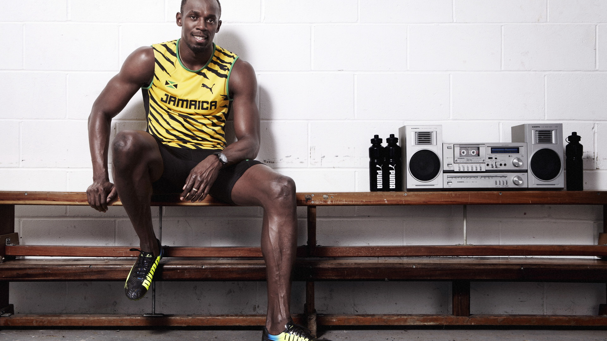
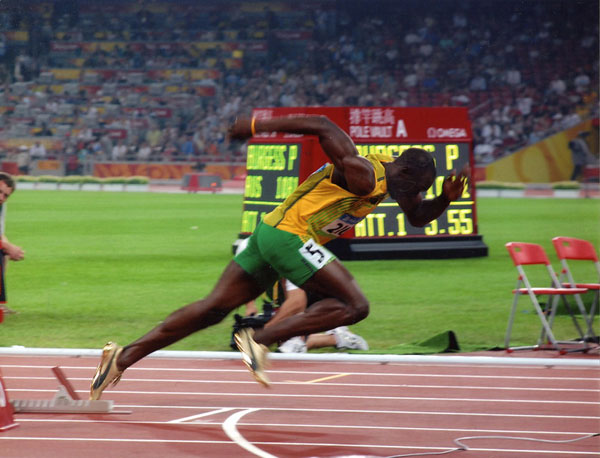
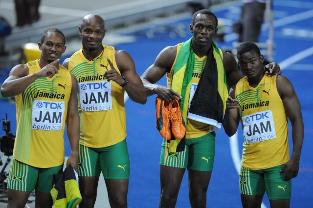
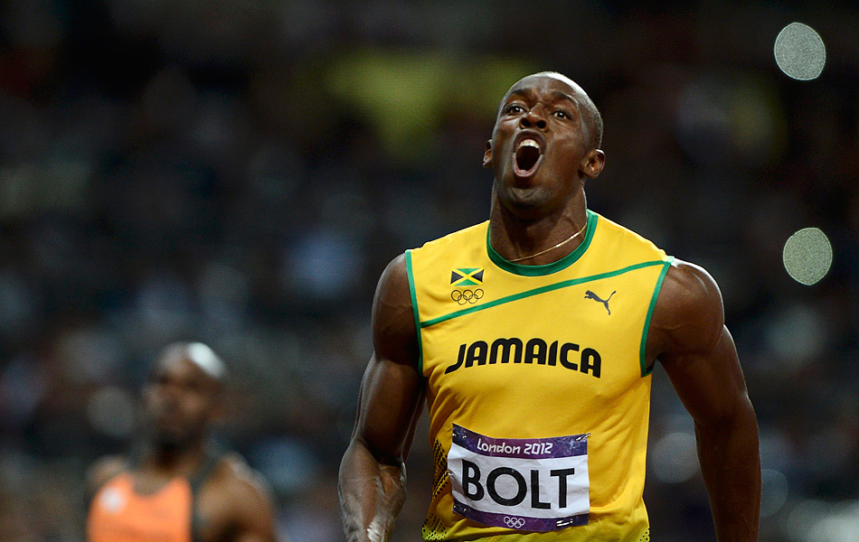

博尔特
2008年夏季奥林匹克运动会，博尔特成为首位在单届奥运会三项短跑赛事中皆打破世界纪录的选手。2011年，博尔特成为史上首位同时拥有100米及200米及4×100米接力世界纪录与奥运冠军头衔的选手。
2008年夏季奥林匹克运动会，博尔特成为首位在单届奥运会三项短跑赛事中皆打破世界纪录的选手。2011年，博尔特成为史上首位同时拥有100米及200米及4×100米接力世界纪录与奥运冠军头衔的选手。

尤塞恩·圣李奥·博尔特（英语：Usain St. Leo Bolt，1986年8月21日－），牙买加短跑运动员，身高196公分，体重86公斤（2009年）。他是男子100米、男子200米以及男子400米接力赛的世界纪录保持人，同时也拥有以上三项赛事的奥运金牌。2008年夏季奥林匹克运动会，博尔特成为首位在单届奥运会三项短跑赛事中皆打破世界纪录的选手，同时也是自1984年卡尔·刘易斯高悬纪录以来、首位在单届奥运会勇夺三项短跑赛事冠军的选手。2009年，博尔特成为史上首位同时拥有100米及200米世界纪录与奥运冠军头衔的选手。2011年，博尔特成为史上首位同时拥有100米及200米及4×100米接力世界纪录与奥运冠军头衔的选手。
2002年，博尔特在世界青年田径锦标赛男子200米项目首度展露锋芒，以16岁之龄成为赛史上最年轻的金牌得主。2004年，他在男子200米项目跑出19.93秒的成绩，以0.2秒之差打破罗伊·马丁的青少年世界记录、成为首位跑入20秒以内的青少年选手。博尔特于2004年转职业，但因伤缺席二季比赛，直到2004年夏季奥林匹克运动会首度参赛。2007年，他在200米项目跑出19.75秒成绩，打破唐·奎利所创下的牙买加国家纪录。2008年5月，博尔特以9.72秒的成绩立下他个人的首个男子100米短跑世界纪录。他随后在2008年夏季奥林匹克运动会双双打破男子100米及200米的世界纪录：其中100米项目以9.69秒突破个人先前9.72秒的纪录，200米则以19.30秒取代麦可·强森在1996年亚特兰大夏季奥运会的19.32秒障碍。北京奥运翌年、2009年8月，博尔特在2009年世界田径锦标赛分别以9.58秒与19.19秒的成绩突破个人100米及200米项目纪录、再高竖障碍。他是自采用数位计时以来，以最大秒数差打破100米世界纪录的选手。他惊人的短跑成就为他赢得了“闪电博尔特”的外号。
一般而言，体格高大的短跑选手会有风阻大、脚步运转较慢的不利因素，然而就博尔特而言，他不但得利于高大身材者才能拥有的大跨距，而且他的脚步运转速度并不逊于体格比他小的选手，所以能屡破世界纪录。博尔特胜利时喜欢做一个类似朝天射箭的姿势，为其著名的个人特色。除此之外，博尔特虽然身高196cm（如果在NBA，196cm算偏矮），但他的弹跳力十分惊人，在2013年NBA全明星名人赛中轻易做出了两个灌篮动作。

正式记录：
2009年8月16日100米德国柏林9秒58（+0.9米/秒，世界纪录）World Record
2009年8月20日200米德国柏林19秒19（-0.3米/秒，世界纪录）World Record
2010年5月28日300米捷克俄斯特拉发30秒97
2007年5月5日400米牙买加京斯敦45秒28
2012年8月11日4×100米接力英国伦敦36秒84（第4棒，世界纪录）World Record
2014年8月3日4×100米接力苏格兰格拉斯哥37秒58（第4棒，英联邦纪录）
参考记录：
2009年5月18日150米英格兰曼彻斯特14秒35（+1.1米/秒，直线跑道的史上最好成绩）
2002年7月19日，在世界青少年田径锦标赛男子200米决赛（20岁以下）中，以20秒61的成绩赢取冠军。成为15岁的史上最年轻的200米青少年冠军。他的外号“闪电”（lightning）也是从这个时候得到的。他的姓氏“Bolt”在英文里也有“闪电”的意思。
2003年7月13日，在世界青少年田径锦标赛男子200米决赛（18岁以下）中，以20秒40的成绩赢取冠军。
2004年4月11日，200米跑出19秒93的成绩，打破了青少年世界纪录。成为20岁以下，第一个跑进20秒的选手。
2007年8月30日，在大阪世界田径锦标赛男子200米决赛中，以19秒91的成绩获得亚军。
2007年9月1日，在大阪世界田径锦标赛男子4×100米接力决赛中，代表牙买加队跑第2棒，以37秒89的成绩获得亚军，打破了牙买加国家纪录（当时）。
2008年5月31日，在纽约锐步大奖赛男子100米比赛中，以9秒72的成绩战胜了2007年大阪田径世锦赛叁冠王泰森·盖伊赢取冠军，并打破了同胞阿萨法·鲍威尔2007年创造的世界纪录（当时）。这场比赛是他正式参加100米后的第5场比赛。
2008年8月16日，在北京奥运会田径男子100米决赛中，以9秒69的成绩赢取冠军，再次打破了自己保持的世界纪录。在最后10米，他张开双臂，开始放慢速度，拍着自己的胸脯冲过了终点线。在世界级比赛中，做了史无前例的表演，给人们留下了深刻的印象。与第2名的差距为0秒20，和卡尔·刘易斯在1984年洛杉矶奥运会与第2名的差距相同，成为奥运会和世锦赛史上最大的差距。
2008年8月20日，在北京奥运会田径男子200米决赛中，面对着风速-0.9米/秒的不利环境，以19秒30的成绩赢取冠军，打破了迈克尔·约翰逊在1996年创造的世界纪录。与第2名的差距为0秒66，这是奥运会和世锦赛史上最大的差距。也成为史上第一个同时赢取100米，200米两项冠军，并且两项都打破世界纪录的选手。
2008年8月22日，在北京奥运会田径男子4×100米接力决赛中，代表牙买加队跑第3棒，以37秒10的成绩赢取冠军，打破了美国队在1992年创造的世界纪录。最终在北京奥运会获得叁项冠军，并且叁项都打破了世界纪录，这是田径史上前无古人的表现。
2009年4月29日，因遇到车祸而受伤，左脚做了手术。
2009年5月17日，在曼彻斯特马路赛男子150米比赛中，以14秒35赢取冠军，创造直线150米史上最好的成绩（参考纪录）。
2009年8月16日，在柏林世界田径锦标赛男子100米决赛中，以9秒58赢取冠军，领先了第2名跑出9秒71（美国纪录，史上第3好成绩）的泰森·盖伊0秒13的差距，再次打破了自己保持的世界纪录，并将世界纪录刷新0.11秒，这是田径男子100米世界纪录史上最大幅度的更新。同时也成为了史上第一个共打破3次100米世界纪录的选手。
2009年8月20日，在柏林世界田径锦标赛男子200米决赛中，在先前有人抢跑，风速-0.3米/秒的不利环境中，以19秒19的成绩赢取冠军，再次打破了自己保持的世界纪录，将世界纪录提高了0.11秒。非常巧合的是，他在8月16日创造的100米世界纪录，也是将以前的世界纪录提高了0.11秒。

2009年8月22日，在柏林世界田径锦标赛男子4×100米接力决赛中，代表牙买加队跑第3棒，以37秒31的成绩赢取冠军，打破了美国队在1993年创造的世锦赛纪录。
2010年5月2日，在牙买加国际田径邀请赛200米决赛，以19秒56的成绩夺冠并打破赛会纪录。
2010年5月28日，在国际田联世界挑战赛捷克俄斯特拉发站300米比赛中，以30秒97的成绩夺冠并打破赛会纪录。
2011年8月28日，在韩国大邱举行的世界田径锦标赛男子100米决赛中，由于抢跑被取消比赛资格。9月3日，他在200米决赛以19秒40成绩成功卫冕冠军。9月4日，他在4×100米接力决赛中，代表牙买加跑最后一棒，以37秒04的成绩成功卫冕，亦刷新世界纪录。
2012年伦敦奥运会以9秒63跑进一百米冠军,更打破了奥运会记录，以19秒32成功卫冕200米冠军，与队友约翰·布莱克等一起以36秒84的成绩打破4×100米接力的世界记录并再次卫冕冠军。
2013年8月11日，在俄罗斯莫斯科举行的世界田径锦标赛100米决赛，以9秒77成绩赢取冠军。8月17日，他在200米决赛以19秒66成绩再次卫冕冠军。8月18日，他在4x100米接力决赛中，代表牙买加队跑最后一棒，以37秒36的成绩再次卫冕冠军。
2015年7月24日，在田径钻石联赛伦敦站的100米决赛，以9秒87赢取冠军。
2015年8月23日，在北京鸟巢举行的2015年世界田径锦标赛上以9秒79的成绩卫冕100米冠军。8月27日，以19秒55的成绩卫冕200米冠军。8月29日，在4x100米接力决赛中，代表牙买加队跑最后一棒，以37秒36的成绩实现单项四连冠。

2002世界少年田径锦标赛牙买加京斯敦金牌200米20秒61
2002世界少年田径锦标赛牙买加京斯敦金牌4×100米接力39秒15（牙买加青少年纪录）
2002世界少年田径锦标赛牙买加京斯敦金牌4×400米接力3分04秒06（牙买加青少年纪录）
2003世界青年田径锦标赛加拿大舍布鲁克金牌200米20秒40
2004加勒比田径大奖赛百慕大汉密尔顿金牌200米19秒93（世界青少年纪录）
2005中美加勒比田径锦标赛巴哈马拿索金牌200米20秒03
2008奥林匹克运动会中国北京金牌100米9秒69（奥运会纪录）
2008奥林匹克运动会中国北京金牌200米19秒30（奥运会纪录）
2008奥林匹克运动会中国北京金牌4×100米接力37秒10（世界纪录，奥运会纪录）
2009世界田径锦标赛德国柏林金牌100米9秒58（世界纪录）
2009世界田径锦标赛德国柏林金牌200米19秒19（世界纪录）
2009世界田径锦标赛德国柏林金牌4×100米接力37秒31（世锦赛纪录）
2011世界田径锦标赛韩国大邱金牌200米19秒40
2011世界田径锦标赛韩国大邱金牌4×100米接力37秒04（世界纪录，世锦赛纪录）
2012奥林匹克运动会英国伦敦金牌100米9秒63（奥运会纪录）
2012奥林匹克运动会英国伦敦金牌200米19秒32
2012奥林匹克运动会英国伦敦金牌4×100米接力36秒84（世界纪录，奥运会纪录）
2013世界田径锦标赛俄罗斯莫斯科金牌100米9秒77
2013世界田径锦标赛俄罗斯莫斯科金牌200米19秒66
2013世界田径锦标赛俄罗斯莫斯科金牌4x100米接力37秒36
2015世界田径锦标赛中国北京金牌100米9秒79
2015世界田径锦标赛中国北京金牌200米19秒55
2015世界田径锦标赛中国北京金牌4x100米接力37秒36
科比·布莱恩特（英语：Kobe Bryant，1978年8月23日－）是一名已退役的美国NBA篮球传奇球星，普遍被认为是历史上最有资格与“篮球之神”迈克尔·乔丹(Michael Jordan)相提并论的球员。有“黑曼巴”、“小飞侠”之称。
勒布朗·瑞蒙·詹姆斯（英语：LeBron Raymone James，1984年12月30日－），生于美国俄亥俄州阿克伦，职业篮球运动员，现效力于NBA联盟克利夫兰骑士队，场上位置为小前锋。绰号为“小皇帝”。